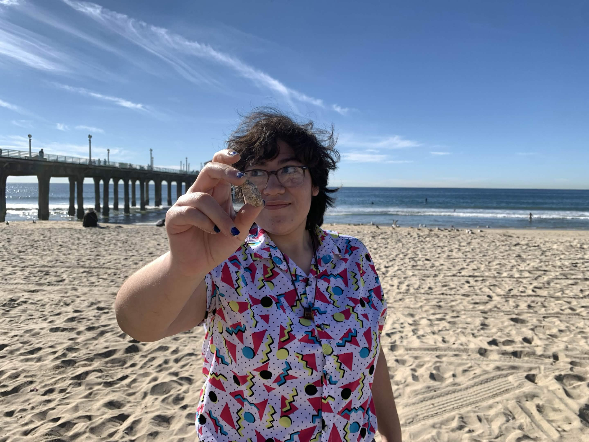

Victoria is a graduating senior at UCR studying biology. And, like many of her STEM peers, she’s an absolute nerd. As a kid, she often escaped into make-believe words through books and movies instead of making real friends, and as an adult, she’s doing the same thing but through more sophisticated methods like video games and TTRPGs (with friends this time!). When she’s not in her own head thinking of new situations to put her characters in, she enjoys making art, writing, birding, and learning about the natural world.
Ruben Linares
Ruben is a current student at Bakersfield College studying Studio Art and Multimedia. He’s a fanatic of all things art, both digital and physical. When he’s not working his boring retail job, he’s writing, drawing, filming and gaming. He loves storytelling and stories in general.
Navy Santander

Navy is an aspiring geochemist who is transferring from Bakersfield College to UC Santa Cruz. They have been playing DnD for 8 years, 3 of which belong to the amazing group shown on this very webpage! When chemicals aren't haunting their existance, Navy can be found drawing, writing, researching niche topics, or dreaming of Every Character they hail as a blorbo.
Emmanuel Zendejas
Emmanuel is allegedly a 20-something-year-old hopefull Paleontology student. He's a big ol' nerd with a passion for extinct animals and storytelling. As a kid, he would often take a teacher's writing prompt way beyond what was necessary, and now he gets to do that for his own writing as the GM. In his spare time, he enjoys TTRPGs, anime, gaming, and a lot of retro media.
Christina Ray
Christina didn't give me text to put here so I'll make something up. The fun thing about attendning CSUMB is that Christina gets to ride a narwal to class everday. They're actually secretly a fey trying to blend into the mortal plane, but they're kinda doing a bad job at hiding it considering they love to bring up really obscure things like old cartoons and facts about mushrooms. She has a keen interest and skill in storytelling and is easily occupied if you say these magic five words: "Tell me about your characters."
Joanna Castro
Joanna didn't give me text to put here so I'll make something up. Joanna is too smart for her own good- but that's not her fault. She was actually genetically engineered in a lab underground, but when their intelligence surpassed that of their creators, she escaped her containment and now roams the overworld. Posing as a 20 year old at UCR, she's majoring in neuroscience and biochem, hoping to crack the key to make everyone as smart as her to finally create a worthy opponent.